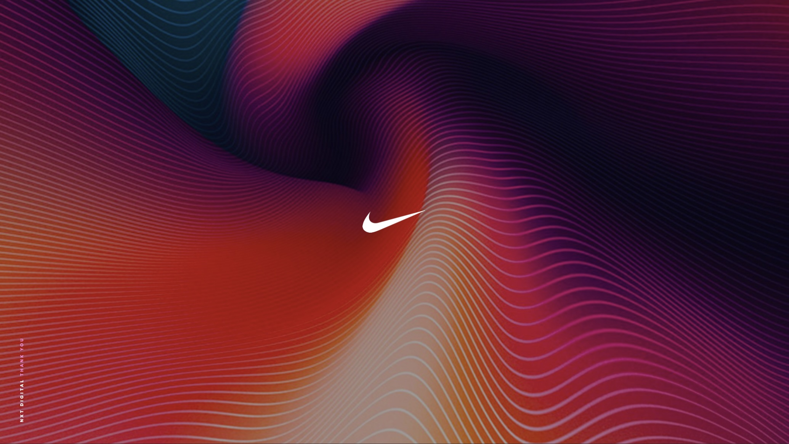

Building the 1.1M body-scan database and question-answering platform that changed how a $50B company sizes its products.

Nike designs apparel, footwear, and equipment for every human body on the planet. But for decades, size systems were built on intuition, legacy grade rules, and sample populations that didn't reflect the diversity of who actually wears Nike products. The data existed — in scattered scan databases, research files, and siloed science teams — but no one could access it, query it, or act on it.
The challenge: build the body data infrastructure that would let Nike size for real human bodies at scale — from the research lab to the design studio to the executive meeting. And do it by building a team from scratch.
"What is the average inseam for women aged 25–35 in Southeast Asia?"
Any Nike stakeholder — scientist, designer, or director — could ask questions like this and get answers backed by real scan data.
None of this was possible without the right people. I hired and led the cross-functional team that built it.
Key insight: Body data only becomes infrastructure when it's accessible to everyone who needs it — not just the scientists who collected it. The platform succeeded because it met different stakeholders in their own language: measurement percentiles for designers, population statistics for scientists, and business impact metrics for executives. One database. Many interfaces. That's what infrastructure looks like.
The platform launched as "Fit for Everybody" — an initiative that embedded body scan data into Nike's sizing and product creation workflows. A 1.1M-scan database moved from a research asset to an operational tool used by design, science, and business teams across the organization. Executive sponsorship was secured across multiple rounds of funding, making body data a sustained strategic priority rather than a one-off project.
Consolidated 1.1M body scans. Established data governance, quality standards, and the team to sustain it. Secured initial executive sponsorship.
Built the question-answering platform. Translated body data into interfaces that designers, scientists, and executives could each use independently.
Launched "Fit for Everybody." Body data moved from a platform into Nike's product creation process — sizing, grading, and fit decisions grounded in real bodies.
Building body data infrastructure inside a $50B company is not a technical problem — it's an organizational one. The scan data existed. The ML existed. What didn't exist was the platform, the team, the access model, and the executive mandate to make body data a first-class input to product decisions.
This is the through-line across SOLS, Body Labs, Amazon, and Nike: the technology to understand the human body at scale has existed for years. The hard work is building the organizational infrastructure — the data layer, the interfaces, the teams, the buy-in — that lets companies actually act on it.
I help organizations build the data layer, platform, and team structure to make body data a first-class input to product decisions — at any scale.